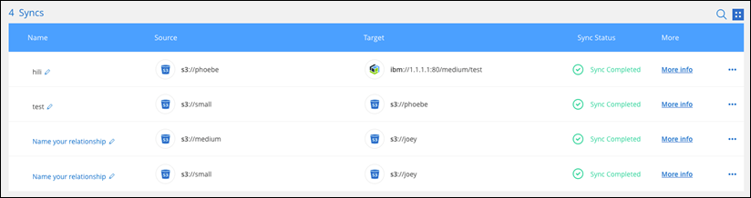
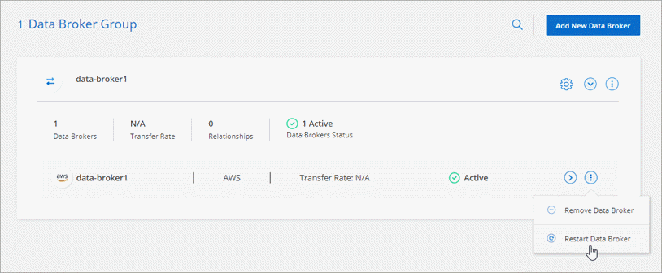

Release notes
Release notes
What's new with BlueXP copy and sync
 Suggest changes
Suggest changes
Learn what's new in BlueXP copy and sync.
11 February 2024
Filter directories by regex
Users now have the option to filter directories using regex.
26 November 2023
Cold storage class support for Azure Blob
The cold storage Azure Blob tier is now available when creating a sync relationship.
Support for Tel Aviv region in AWS data brokers
Tel Aviv is now a supported region when creating a data broker in AWS.
Update to node version for data brokers
All new data brokers will now use node version 21.2.0. Data brokers that are not compatible with this update, such as CentOS 7.0 and Ubuntu Server 18.0, will no longer work with BlueXP copy and sync.
3 September 2023
Exclude files by regex
Users now have the option to exclude files using regex.
Add S3 keys when creating Azure data broker
Users may now add AWS S3 access keys and secret keys when creating an Azure data broker.
6 August 2023
Use existing Azure security groups when creating a data broker
Users now have the option to use existing Azure security groups when creating a data broker.
The service account used when creating the data broker must have these permissions:
-
"Microsoft.Network/networkSecurityGroups/securityRules/read"
-
"Microsoft.Network/networkSecurityGroups/read"
Encrypt data when syncing to Google Storage
Users now have the option to specify a customer-managed encryption key when creating a sync relationship with a Google Storage bucket as the target. You can manually input your key or choose from a list of your keys in a single region.
The service account used when creating the data broker must have these permissions:
-
cloudkms.cryptoKeys.list
-
cloudkms.keyRings.list
9 July 2023
Remove multiple sync relationships at once
Users are now able to delete more than one sync relationship at a time in the UI.
Copy only ACL
Users now have additional options for copying ACL information in CIF and NFS relationships. When creating or managing a sync relationship, you can copy files only, copy ACL information only, or copy files and ACL information.
Updated to Node.js 20
Copy and sync has updated to Node.js 20. All available data brokers will be updated. Operation systems incompatible with this update cannot be installed, and incompatible existing systems may experience performance issues.
11 June 2023
Support automatic abort by minutes
Active syncs that have not completed can now be aborted after fifteen minutes using the Sync Timeout feature.
Copy access time metadata
In relationships including a file system, the Copy for Objects feature now copies access time metadata.
8 May 2023
Hard link capabilities
Users can now include hard links for syncs involving unsecured NFS to NFS relationships.
Ability to add user certificate for data brokers in secure NFS relationships
Users are now able to set their own certificate for the target data broker when creating a secure NFS relationship. They will need to set a server name and provide a private key and certificate ID when doing so. This feature is available for all data brokers.
Extended exclusion period for recently modified files
Users can now exclude files that were modified up to 365 days before the scheduled sync.
Filter relationships in UI by relationship ID
Those using the RESTful API can now filter relationships using relationship IDs.
2 April 2023
Additional support for Azure Data Lake Storage Gen2 relationships
You can now create sync relationships with Azure Data Lake Storage Gen2 as a source and target with the following:
-
Azure NetApp Files
-
Amazon FSx for ONTAP
-
Cloud Volumes ONTAP
-
On-Prem ONTAP
Filter directories by full path
In addition to filtering directories out by name, you can now filter directories by their full path.
7 March 2023
EBS Encryption for AWS data brokers
You can now encrypt AWS data broker volumes using a KMS key from your account.
5 Feb 2023
Additional support for Azure Data Lake Storage Gen2, ONTAP S3 Storage, and NFS
Cloud Sync now supports additional sync relationships for ONTAP S3 Storage and NFS:
-
ONTAP S3 Storage to NFS
-
NFS to ONTAP S3 Storage
Cloud Sync also has additional support for Azure Data Lake Storage Gen2 as both a source and target to:
-
NFS server
-
SMB server
-
ONTAP S3 Storage
-
StorageGRID
-
IBM Cloud Object Storage
Upgrade to Amazon Web Services data broker operating system
The operating system for AWS data brokers has been upgraded to the Amazon Linux 2022.
3 Jan 2023
Show data broker local configuration on UI
There is now a Show Configuration option that allows users to view the local configuration of each data broker on the UI.
Upgrade to Azure and Google Cloud data broker operating system
The operating system for data brokers in Azure and Google Cloud has been upgraded to the Rocky Linux 9.0.
11 Dec 2022
Filter directories by name
A new Exclude Directory Names setting is now available for sync relationships. Users can filter out a maximum of 15 directory names from their sync. The .copy-offload, .snapshot, ~snapshot directories are excluded by default.
Additional Amazon S3 and ONTAP S3 Storage support
Cloud Sync now supports additional sync relationships for AWS S3 and ONTAP S3 Storage:
-
AWS S3 to ONTAP S3 Storage
-
ONTAP S3 Storage to AWS S3
30 Oct 2022
Continuous sync from Microsoft Azure
The Continuous Sync setting is now supported from a source Azure storage bucket to a cloud storage using an Azure data broker.
After the initial data sync, Cloud Sync listens for changes on the source Azure storage bucket and continuously syncs any changes to the target as they occur. This setting is available when syncing from an Azure storage bucket to Azure Blob storage, CIFS, Google Cloud Storage, IBM Cloud Object Storage, NFS, and StorageGRID.
The Azure data broker needs a custom role and the following permissions to use this setting:
'Microsoft.Storage/storageAccounts/read',
'Microsoft.EventGrid/systemTopics/eventSubscriptions/write',
'Microsoft.EventGrid/systemTopics/eventSubscriptions/read',
'Microsoft.EventGrid/systemTopics/eventSubscriptions/delete',
'Microsoft.EventGrid/systemTopics/eventSubscriptions/getFullUrl/action',
'Microsoft.EventGrid/systemTopics/eventSubscriptions/getDeliveryAttributes/action',
'Microsoft.EventGrid/systemTopics/read',
'Microsoft.EventGrid/systemTopics/write',
'Microsoft.EventGrid/systemTopics/delete',
'Microsoft.EventGrid/eventSubscriptions/write',
'Microsoft.Storage/storageAccounts/write'4 Sept 2022
Additional Google Drive support
-
Cloud Sync now supports additional sync relationships for Google Drive:
-
Google Drive to NFS servers
-
Google Drive to SMB servers
-
-
You can also generate reports for sync relationships that include Google Drive.
Continuous sync enhancement
You can now enable the Continuous Sync setting on the following types of sync relationships:
-
S3 bucket to an NFS server
-
Google Cloud Storage to an NFS server
Email notifications
You can now receive Cloud Sync notifications by email.
In order to receive the notifications by email, you'll need to enable the Notifications setting on the sync relationship and then configure the Alerts and Notification settings in BlueXP.
31 July 2022
Google Drive
You can now sync data from an NFS server or SMB server to Google Drive. Both "My Drive" and "Shared Drives" are supported as targets.
Before you can create a sync relationship that includes Google Drive, you need to set up a service account that has the required permissions and a private key. Learn more about Google Drive requirements.
Additional Azure Data Lake support
Cloud Sync now supports additional sync relationships for Azure Data Lake Storage Gen2:
-
Amazon S3 to Azure Data Lake Storage Gen2
-
IBM Cloud Object Storage to Azure Data Lake Storage Gen2
-
StorageGRID to Azure Data Lake Storage Gen2
New ways to set up sync relationships
We've added additional ways to set up sync relationships directly from BlueXP's Canvas.
Drag and drop
You can now set up a sync relationship from the Canvas by dragging and dropping one working environment on top of another.

Right panel setup
You can now set up a sync relationship for Azure Blob storage or for Google Cloud Storage by selecting the working environment from the Canvas and then selecting the sync option from the right panel.

3 July 2022
Support for Azure Data Lake Storage Gen2
You can now sync data from an NFS server or SMB server to Azure Data Lake Storage Gen2.
When creating a sync relationship that includes Azure Data Lake, you need to provide Cloud Sync with the storage account connection string. It must be a regular connection string, not a shared access signature (SAS).
Continuous sync from Google Cloud Storage
The Continuous Sync setting is now supported from a source Google Cloud Storage bucket to a cloud storage target.
After the initial data sync, Cloud Sync listens for changes on the source Google Cloud Storage bucket and continuously syncs any changes to the target as they occur. This setting is available when syncing from a Google Cloud Storage bucket to S3, Google Cloud Storage, Azure Blob storage, StorageGRID, or IBM Storage.
The service account associated with your data broker needs the following permissions to use this setting:
- pubsub.subscriptions.consume
- pubsub.subscriptions.create
- pubsub.subscriptions.delete
- pubsub.subscriptions.list
- pubsub.topics.attachSubscription
- pubsub.topics.create
- pubsub.topics.delete
- pubsub.topics.list
- pubsub.topics.setIamPolicy
- storage.buckets.updateNew Google Cloud region support
The Cloud Sync data broker is now supported in the following Google Cloud regions:
-
Columbus (us-east5)
-
Dallas (us-south1)
-
Madrid (europe-southwest1)
-
Milan (europe-west8)
-
Paris (europe-west9)
New Google Cloud machine type
The default machine type for the data broker in Google Cloud is now n2-standard-4.
6 June 2022
Continuous sync
A new setting enables you to continuously sync changes from a source S3 bucket to a target.
After the initial data sync, Cloud Sync listens for changes on the source S3 bucket and continuously syncs any changes to the target as they occur. There's no need to rescan the source at scheduled intervals. This setting is available only when syncing from an S3 bucket to S3, Google Cloud Storage, Azure Blob storage, StorageGRID, or IBM Storage.
Note that the IAM role associated with your data broker will need the following permissions to use this setting:
"s3:GetBucketNotification",
"s3:PutBucketNotification"These permissions are automatically added to any new data brokers that you create.
Show all ONTAP volumes
When you create a sync relationship, Cloud Sync now displays all volumes on a source Cloud Volumes ONTAP system, on-premises ONTAP cluster, or FSx for ONTAP file system.
Previously, Cloud Sync would only display the volumes that matched the selected protocol. Now all of the volumes display, but any volumes that don't match the selected protocol or that don't have a share or export are greyed out and not selectable.
Copying tags to Azure Blob
When you create a sync relationship where Azure Blob is the target, Cloud Sync now enables you to copy tags to the Azure Blob container:
-
On the Settings page, you can use the Copy for Objects setting to copy tags from the source to the Azure Blob container. This is in addition to copying metadata.
-
On the Tags/Metadata page, you can specify Blob index tags to set on the objects that are copied to the Azure Blob container. Previously, you could only specify relationship metadata.
These options are supported when Azure Blob is the target and the source is either Azure Blob or an S3-compatible endpoint (S3, StorageGRID, or IBM Cloud Object Storage).
1 May 2022
Sync timeout
A new Sync Timeout setting is now available for sync relationships. This setting enables you to define whether Cloud Sync should cancel a data sync if the sync hasn't completed in the specified number of hours or days.
Notifications
A new Notifications setting is now available for sync relationships. This setting enables you to choose whether to receive Cloud Sync notifications in BlueXP's Notification Center. You can enable notifications for successful data syncs, failed data syncs, and canceled data syncs.

3 April 2022
Data broker group enhancements
We made several enhancements to data broker groups:
-
You can now move a data broker to a new or existing group.
-
You can now update the proxy configuration for a data broker.
-
Finally, you can also delete data broker groups.
Dashboard filter
You can now filter the contents of the Sync Dashboard to more easily find sync relationships that match a certain status. For example, you can filter on sync relationships that have a failed status

3 March 2022
Sorting in the dashboard
You now sort the dashboard by sync relationship name.

Enhancement to Data Sense integration
In the previous release, we introduced Cloud Sync integration with Cloud Data Sense. In this update, we enhanced the integration by making it easier to create the sync relationship. After you initiate a data sync from Cloud Data Sense, all of the source information is contained in a single step and only requires you to enter a few key details.

6 February 2022
Enhancement to data broker groups
We changed how you interact with data brokers by emphasizing data broker groups.
For example, when you create a new sync relationship, you select the data broker group to use with the relationship, rather than a specific data broker.

In the Manage Data Brokers tab, we also show the number of sync relationships that a data broker group is managing.

2 January 2022
New Box sync relationships
Two new sync relationships are supported:
-
Box to Azure NetApp Files
-
Box to Amazon FSx for ONTAP
Relationship names
You can now provide a meaningful name to each of your sync relationships to more easily identify the purpose of each relationship. You can add the name when you create the relationship and any time after.

S3 private links
When you sync data to or from Amazon S3, you can choose whether to use an S3 private link. When the data broker copies data from the source to the target, it goes through the private link.
Note that the IAM role associated with your data broker will need the following permission to use this feature:
"ec2:DescribeVpcEndpoints"This permission is automatically added to any new data brokers that you create.
Glacier Instant Retrieval
You can now choose the Glacier Instant Retrieval storage class when Amazon S3 is the target in a sync relationship.
ACLs from object storage to SMB shares
Cloud Sync now supports copying ACLs from object storage to SMB shares. Previously, we only supported copying ACLs from an SMB share to object storage.
SFTP to S3
Creating a sync relationship from SFTP to Amazon S3 is now supported in the user interface. This sync relationship was previously supported with the API only.
Table view enhancement
We redesigned the table view on the Dashboard for ease of use. If you select More info, Cloud Sync filters the dashboard to show you more information about that specific relationship.

Support for Jarkarta region
Cloud Sync now supports deploying the data broker in the AWS Asia Pacific (Jakarta) region.
28 November 2021
ACLs from SMB to object storage
Cloud Sync can now copy access control lists (ACLs) when setting up a sync relationship from a source SMB share to object storage (except for ONTAP S3).
Cloud Sync doesn't support copying ACLs from object storage to SMB shares.
Update licenses
You can now update Cloud Sync licenses that you extended.
If you extended a Cloud Sync license that you purchased from NetApp, you can add the license again to refresh the expiration date.
Update Box credentials
You can now update the Box credentials for an existing sync relationship.
31 October 2021
Box support
Box support is now available in the Cloud Sync user interface as a preview.
Box can be the source or target in several types of sync relationships. View the list of supported sync relationships.
Date Created setting
When an SMB server is the source, a new sync relationship setting called Date Created enables you to sync files that were created after a specific date, before a specific date, or between a specific time range.
4 October 2021
Additional Box support
Cloud Sync now supports additional sync relationships for Box when using the Cloud Sync API:
-
Amazon S3 to Box
-
IBM Cloud Object Storage to Box
-
StorageGRID to Box
-
Box to an NFS server
-
Box to an SMB server
Reports for SFTP paths
You can now create a report for SFTP paths.
2 September 2021
Support for FSx for ONTAP
You can now sync data to or from an Amazon FSx for ONTAP file system.
1 August 2021
Update credentials
Cloud Sync now enables you to update the data broker with the latest credentials of the source or target in an existing sync relationship.
This enhancement can help if your security policies require you to update credentials on a periodic basis. Learn how to update credentials.

Tags for object storage targets
When creating a sync relationship, you can now add tags to the object storage target in a sync relationship.
Adding tags is supported with Amazon S3, Azure Blob, Google Cloud Storage, IBM Cloud Object Storage, and StorageGRID.

Support for Box
Cloud Sync now supports Box as the source in a sync relationship to Amazon S3, StorageGRID, and IBM Cloud Object Storage when using the Cloud Sync API.
Public IP for data broker in Google Cloud
When you deploy a data broker in Google Cloud, you can now choose whether to enable or disable a public IP address for the virtual machine instance.
Dual-protocol volume for Azure NetApp Files
When you choose the source or target volume for Azure NetApp Files, Cloud Sync now displays a dual-protocol volume no matter which protocol you chose for the sync relationship.
7 July 2021
ONTAP S3 Storage and Google Cloud Storage
Cloud Sync now supports sync relationships between ONTAP S3 Storage and a Google Cloud Storage bucket from the user interface.
Object metadata tags
Cloud Sync can now copy object metadata and tags between object-based storage when you create a sync relationship and enable a setting.
Support for HashiCorp Vaults
You can now set up the data broker to access credentials from an external HashiCorp Vault by authenticating with a Google Cloud service account.
Define tags or metadata for S3 bucket
When setting up a sync relationship to an Amazon S3 bucket, the Sync Relationship wizard now enables you to define the tags or metadata that you want to save on the objects in the target S3 bucket.
The tagging option was previously part of the sync relationship's settings.
7 June 2021
Storage classes in Google Cloud
When a Google Cloud Storage bucket is the target in a sync relationship, you can now choose the storage class that you want to use. Cloud Sync supports the following storage classes:
-
Standard
-
Nearline
-
Coldline
-
Archive
2 May 2021
Errors in reports
You can now view the errors found in reports and you can delete the last report or all reports.
Compare attributes
A new Compare by setting is now available for each sync relationship.
This advanced setting enables you to choose whether Cloud Sync should compare certain attributes when determining whether a file or directory has changed and should be synced again.
11 Apr 2021
Standalone Cloud Sync service is retired
The standalone Cloud Sync service has been retired. You should now access Cloud Sync directly from BlueXP where all of the same features and functionality are available.
After logging in to BlueXP, you can switch to the Sync tab at the top and view your relationships, just like before.
Google Cloud buckets in different projects
When setting up a sync relationship, you can choose from Google Cloud buckets in different projects, if you provide the required permissions to the data broker's service account.
Metadata between Google Cloud Storage and S3
Cloud Sync now copies metadata between Google Cloud Storage and S3 providers (AWS S3, StorageGRID, and IBM Cloud Object Storage).
Restart data brokers
You can now restart a data broker from Cloud Sync.

Message when not running the latest release
Cloud Sync now identifies when a data broker isn't running the latest software release. This message can help to ensure that you're getting the latest features and functionalities.